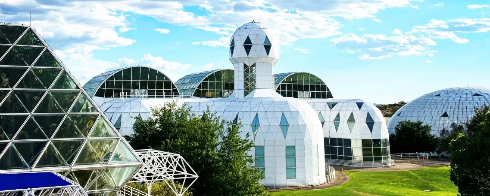
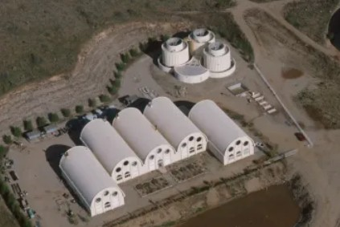

A laboratory for Earth's future.
Biosphere 2 advances our understanding of natural and human-made ecosystems through integrated research that drives the discovery and development of interventions that increase the resilience and sustainability of Earth systems and human quality of life.

Scaling solutions for Earth — and beyond.
We advance research in our unique facilities, conduct interdisciplinary science education, and foster leadership initiatives focused on developing scalable solutions for our planet and beyond.
Biosphere 2 advances our understanding of natural and human-made ecosystems through integrated research that drives the discovery and development of interventions that increase the resilience and sustainability of Earth systems and human quality of life.
Our work spans five biomes enclosed beneath 6,500 panes of glass, a 3.14-acre technosphere of mechanical systems, and an expanding portfolio of specialized research spaces — from co-located food and photovoltaic energy production to a human-habitat analog for the Moon and Mars. Together they make Biosphere 2 the world's largest indoor controlled environment for ecological and climate-change research.
We carry the same frontier spirit that defined the original Biospherian missions of the 1990s — but redirect it toward a sharper question: how do we keep Earth's life-support systems running as the planet warms, biodiversity declines, and human populations grow? Answering that question requires integrated science at a scale no conventional laboratory can match.
From frontier ranch to frontier science.
The land beneath Biosphere 2 has been many things: a 19th-century ranch, a corporate retreat, the most ambitious closed-system experiment ever attempted, a Columbia University campus, and finally a University of Arizona research facility.

Energy CenterA short history of an unusual building.
The University of Arizona assumed ownership of Biosphere 2 in July 2011. A generous gift from the Philecology Foundation helps fund operations and a portion of research; additional grants and awards — primarily from the National Science Foundation — sustain the rest.
In the 1800s, this property was part of the Samaniego CDO Ranch. After several changes of ownership, it became a conference center in the 1960s and 1970s — first for Motorola, then for The University of Arizona. Space Biospheres Ventures bought the property in 1984 and began construction of the current facility in 1986 to research and develop self-sustaining space-colonization technology.
Samaniego CDO Ranch & conference era
The land was originally part of the Samaniego CDO Ranch. After several changes of ownership it became a conference center in the 1960s and 1970s — first for Motorola, then for The University of Arizona.
Space Biospheres Ventures acquires the property
Space Biospheres Ventures purchased the property in 1984 and broke ground on the current facility in 1986. Their goal: research and develop self-sustaining space-colonization technology inside a sealed, miniature Earth.
The original Biospherian missions
Two missions sealed crews of Biospherians inside the glass enclosure to measure survivability. Behind the highly public exercise was useful research that helped further ecological understanding — several first-person accounts by former crew members offer different perspectives on the experiment.
Decisions Investment Corp. & Columbia University
In 1994, Decisions Investment Corporation assumed control of the property. Columbia University managed it from 1996 to 2003, reconfiguring the structure for a different mode of scientific research — including studies on the effects of carbon dioxide on plants — and building classrooms and housing for college students of earth systems science.
CDO Ranching & the UArizona lease
The property was sold on June 4, 2007, to CDO Ranching and its development partners, who then leased it to UArizona from 2007 to 2011. The enclosure began serving as a tool to support research already underway by UArizona scientists.
University of Arizona ownership
UArizona assumed full ownership in July 2011. Stewardship of Biosphere 2 now allows the university to perform key experiments — such as the Landscape Evolution Observatory — aimed at quantifying some of the consequences of global climate change.
Five living systems, one sealed laboratory.
There are five major biome types in the world; Biosphere 2 contains all but one — and they share a single sealed atmosphere, a single technosphere, and a single research mission.
Ocean
A 700,000-gallon saltwater system undergoing revitalization into a dedicated coral reef research tank.
Mangrove Wetlands
Coastal transition zone filtering nutrients between land and sea — and a buffer against storm surge.
Tropical Rainforest
A mature, multi-story rainforest used to study carbon cycling, drought response, and forest-atmosphere exchange.
Savanna Grassland
A transition ecosystem bridging rainforest and desert — used to study fire, grazing, and rainfall variability.
Fog Desert
A coastal-style desert whose moisture arrives as fog rather than rain — a sensitive climate-change sentinel.
The name “Biosphere 2” derives from the idea that it is modeled on Earth — Biosphere 1. Every biome under the glass is a working research system, not a diorama: each is instrumented, sampled, and subjected to controlled experiments that would be impossible or unethical to attempt in the wild.
The technosphere: a 3.14-acre machine room.
The basement of Biosphere 2 — the technosphere — houses the electrical, plumbing, and mechanical systems that keep five living biomes alive under glass. Lose power on a sunny summer day and biomes can be irreparably damaged within twenty minutes.
The technosphere covers nearly 3.14 acres beneath the visible structure. Twenty-six air handlers can heat and cool the air, remove particles, maintain humidity, and generate condensate water — the source of rain, fog, and ocean refill inside the enclosure.
The building with the five arched segments and three towers is the Energy Center complex. Biosphere 2 requires continuous power to maintain proper conditions for the living organisms inside and for ongoing experiments. Temperature rise following a power failure on a sunny summer day could, within 20 minutes, irreparably damage the biomes.
Within the five arches are two large generators. The primary generator uses natural gas for fuel; a backup generator uses diesel. In addition to the large generators inside this building, there are boilers to heat water and chillers to cool water. The three large towers are used to cool air by drawing it across a column of water.
Read the strategic plan, meet the leadership, or get involved.
Biosphere 2's mission is carried out by an unusual combination of scientists, engineers, educators, donors, and partners. The pages below outline the strategy, the people, and the pathways in.